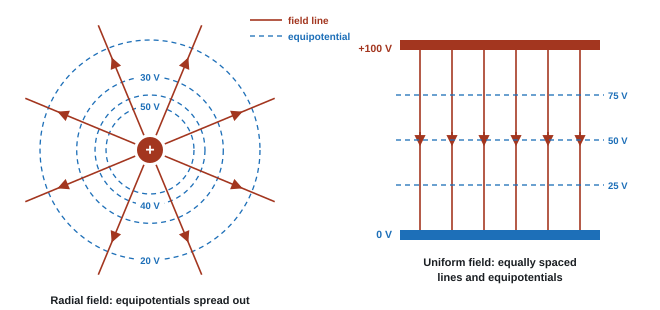

Electric Fields
Rub a balloon on your jumper and it can lift your hair without touching it: a charged object fills the space around it with an electric field. In this topic we define field strength, use Coulomb's law for the force between two charges, meet electric potential, and see how field and potential describe the same thing in two different ways. These ideas run straight on into capacitors, particle accelerators and the deflection of electron beams.
Spec92Electric fields as force fields
An electric field is a region where a charged particle experiences a force.
- Every charge sets up an electric field around itself. Any other charge placed in that field feels a force.
- Like charges repel; unlike charges attract.
- The direction of an electric field at a point is the direction of the force on a small positive test charge placed there. A negative charge feels a force the opposite way.
- So field lines point away from positive charges and towards negative charges.
- Electric forces act on charges whether they move or not. Compare: a gravitational field acts on mass, and a magnetic field acts on moving charges (and currents).
| Field | Acts on | Defined as | Unit |
|---|---|---|---|
| Gravitational | mass | force per unit mass, g = F/m | N kg⁻¹ |
| Electric | charge | force per unit positive charge, E = F/Q | N C⁻¹ (= V m⁻¹) |
| Magnetic | moving charge or current | B from F = BIl | T |
- Definition: "region / area where a charged particle experiences a force". "Region where a charge feels a force" is enough; "region of force" alone is not.
- Sign of a charge from a diagram: "negative, because the field direction is the direction of the force on a positive charge" (e.g. Earth's surface, where the fair-weather field points downwards).
Often asked as: one-mark definition; MCQ reading the sign of charges X and Y from arrowed field lines.
Reading an arrow as the direction an electron (or any negative charge) moves. Field lines show the force on a positive charge.
Spec93Electric field strength: E = F/Q
Electric field strength is defined as E = F/Q; use this equation.
Electric field strength
- E = electric field strength (N C⁻¹), F = force on the charge (N), Q = charge (C).
- In words: the force per unit positive charge at that point.
- E is a vector. Its direction is the direction of the force on a positive charge.
- Rearranged, F = EQ gives the force on any charge in a known field. For a negative charge, F points opposite to E.
- Once you have F, use the rest of mechanics: a = F/m, work done = F × distance, or combine with the weight.
force and acceleration of a proton
A proton sits in a uniform field of 5.0 × 10³ N C⁻¹.
F = EQ = 5.0 × 10³ × 1.60 × 10⁻¹⁹ = 8.0 × 10⁻¹⁶ N, in the direction of the field.
a = F/m = 8.0 × 10⁻¹⁶ ÷ 1.67 × 10⁻²⁷ = 4.8 × 10¹¹ m s⁻²
An electron in the same field feels the same size of force, but in the opposite direction, and its acceleration is about 1800 times larger.
An electron is in a uniform electric field of strength \(5.0 \times 10^{4}\ \text{N C}^{-1}\). Calculate the force on it and its acceleration, and compare the force with its weight.
Show solution
\[ F = EQ = 5.0\times10^{4} \times 1.60\times10^{-19} = 8.0 \times 10^{-15}\ \text{N} \] \[ a = \frac{F}{m} = \frac{8.0\times10^{-15}}{9.11\times10^{-31}} = 8.8 \times 10^{15}\ \text{m s}^{-2} \]The weight is \(mg = 9.11\times10^{-31} \times 9.81 = 8.9 \times 10^{-30}\ \text{N}\), about \(10^{15}\) times smaller than the electric force. That's why gravity is ignored for electrons and ions in electric fields. The force acts in the opposite direction to the field, because the electron is negative.
- "Use of F = EQ", then "F − W to find the resultant force" if the particle also has weight, then "use of F = ma".
- Field strength units: N C⁻¹ or V m⁻¹ are both accepted.
Often asked as: force on a charged drop or ion, then its acceleration; force between plates, then the work done over a distance.
Using V/d as if it were the force. V/d is the field; multiply by Q to get the force.
Using the total of two charges for Q when only one charge is in the field.
Spec94Coulomb's law: the force between two charges
Use F = Q₁Q₂/4πε₀r² for the force between two point charges.
Coulomb's law
- F = force between the charges (N), Q₁ and Q₂ = the charges (C), r = separation of their centres (m).
- ε₀ = permittivity of free space = 8.85 × 10⁻¹² F m⁻¹ (data booklet). The constant 1/4πε₀ = 8.99 × 10⁹ N m² C⁻² is accepted too: F = kQ₁Q₂/r².
- It is an inverse-square law: double r and F falls to a quarter; triple r and F falls to a ninth.
- Charged spheres behave as point charges at their centres.
- Sign: a positive answer means repulsion (like charges); a negative one means attraction. Most questions only want the size.
- The same-sized force acts on each charge, in opposite directions (Newton's third law).
two small charged spheres
Charges of +3.0 nC and +5.0 nC have centres 2.5 cm apart.
F = (8.99 × 10⁹ × 3.0 × 10⁻⁹ × 5.0 × 10⁻⁹) ÷ (0.025)² = 1.35 × 10⁻⁷ ÷ 6.25 × 10⁻⁴ = 2.2 × 10⁻⁴ N, repulsive.
Convert first: nC → × 10⁻⁹ C; cm → m.
the hydrogen atom
An electron and a proton are 5.3 × 10⁻¹¹ m apart.
F = 8.99 × 10⁹ × (1.60 × 10⁻¹⁹)² ÷ (5.3 × 10⁻¹¹)² = 8.2 × 10⁻⁸ N (attractive)
If this provides the centripetal force: mv²/r = F → v = √(Fr/m) = √(8.2 × 10⁻⁸ × 5.3 × 10⁻¹¹ ÷ 9.11 × 10⁻³¹) = 2.2 × 10⁶ m s⁻¹
In a simple model of a hydrogen atom, the electron orbits the proton at a distance of \(5.3 \times 10^{-11}\ \text{m}\). (a) Calculate the electric force between them. (b) Compare it with the gravitational force, \(3.6\times10^{-47}\ \text{N}\). (c) The electric force provides the centripetal force. Find the electron's speed.
Show solution
(a) Both charges have size \(e = 1.60\times10^{-19}\ \text{C}\):
\[ F = \frac{8.99\times10^{9} \times (1.60\times10^{-19})^2}{(5.3\times10^{-11})^2} = \frac{2.30\times10^{-28}}{2.81\times10^{-21}} = 8.2 \times 10^{-8}\ \text{N} \]The charges are opposite, so the force is attractive.
(b) \(8.2\times10^{-8} / 3.6\times10^{-47} \approx 2 \times 10^{39}\). Gravity is completely negligible inside atoms.
(c) Using circular motion, \(F = mv^2/r\):
\[ v = \sqrt{\frac{Fr}{m}} = \sqrt{\frac{8.2\times10^{-8} \times 5.3\times10^{-11}}{9.11\times10^{-31}}} = 2.2 \times 10^{6}\ \text{m s}^{-1} \]That is under 1% of the speed of light, so the non-relativistic formulas are fine here.
- "Use of F = Q₁Q₂/4πε₀r² (accept F = kQ₁Q₂/r²)". The sign of F is optional.
- For nuclei, a separate mark for the charge: alpha = 2e, gold nucleus = 79e, each e = 1.60 × 10⁻¹⁹ C.
Often asked as: force between spheres or particles; separation for a given force; MCQ on F when r doubles (F/4); force on an electron in an atom set equal to mv²/r.
Not squaring r, or squaring the charges (the classic MCQ distractors).
Using the diameter for r, or measuring from the surfaces instead of the centres.
Forgetting the unit on the final answer.
- Charged spheres on threads: the thread makes angle θ with the vertical; resolving gives tan θ = F/W, so F = mg tan θ, and then Q from Coulomb's law (WPH14 Jan 2022, Jun 2023).
- Coulomb force then motion: F = ma, then a time or distance with suvat, compared with a claim (WPH14 Jun 2024).
- Atom as circular motion: Coulomb force = mv²/r for the electron (WPH14 Jan 2026).
Spec95Field strength of a point charge
Use E = Q/4πε₀r² for the electric field of a point charge.
Field strength of a point charge
Place a small positive test charge \(q\) a distance \(r\) from a point charge \(Q\). Coulomb's law gives the force on it:
\[ F = \frac{Qq}{4\pi\varepsilon_0 r^2} \]Field strength is force per unit charge, so divide by \(q\):
\[ E = \frac{F}{q} = \frac{Qq}{4\pi\varepsilon_0 r^2 \, q} \quad\Rightarrow\quad \boxed{E = \frac{Q}{4\pi\varepsilon_0 r^2}} \]The test charge cancels: the field belongs to \(Q\) alone, whether or not anything is there to feel it.
- E = field strength (N C⁻¹), Q = the charge making the field (C), r = distance from its centre (m).
- This comes from E = F/Q with Coulomb's law: put a test charge q at r; F = Qq/4πε₀r², so F/q = Q/4πε₀r².
- Radial field: lines spread out from the charge, so E ∝ 1/r². Double the distance, quarter the field.
- Direction: away from a positive charge, towards a negative charge.
- A charged conducting sphere gives the same field outside it as a point charge at its centre.
More than one charge
Fields are vectors. Work out each field separately (size from the formula, direction from the sign of the charge), then add them as vectors. On a straight line: same direction → add; opposite directions → subtract.
field between two charges
+6.0 nC and −4.0 nC are 0.20 m apart. Find E at the midpoint (0.10 m from each).
From +6.0 nC: E₁ = 8.99 × 10⁹ × 6.0 × 10⁻⁹ ÷ 0.10² = 5390 N C⁻¹, pointing away from it (towards the −4.0 nC).
From −4.0 nC: E₂ = 8.99 × 10⁹ × 4.0 × 10⁻⁹ ÷ 0.10² = 3600 N C⁻¹, pointing towards it (also towards the −4.0 nC).
Same direction, so add: E = 5390 + 3600 = 9.0 × 10³ N C⁻¹ towards the negative charge.
With two like charges the fields at the midpoint point opposite ways and you subtract. Equal like charges give zero field at the midpoint: a neutral point.
The dome of a Van de Graaff generator is a sphere of radius 0.15 m carrying a charge of \(+2.0\ \mu\text{C}\). Calculate the field strength at its surface and 0.30 m from its centre.
Show solution
\[ E_{0.15} = \frac{8.99\times10^{9} \times 2.0\times10^{-6}}{0.15^2} = 8.0 \times 10^{5}\ \text{N C}^{-1} \] \[ E_{0.30} = \frac{8.99\times10^{9} \times 2.0\times10^{-6}}{0.30^2} = 2.0 \times 10^{5}\ \text{N C}^{-1} \]Doubling the distance from the centre quarters the field. Notice that 0.30 m from the centre is only 0.15 m from the surface: always measure from the centre.
- "Adds E due to X to E due to Y" with the directions considered.
- Units N C⁻¹ or V m⁻¹.
Often asked as: field at a point from one or two charges; the charge on the Earth from the field at its surface; field in a molecule.
Subtracting when both fields point the same way (nearly half of one cohort did this).
Using Q₁Q₂ in a field question. A field needs only the source charge.
Giving field strength in V instead of V m⁻¹.
- Surface charge density = Q/A with A = 4πr² for a sphere (WPH14 Jan 2020).
- Capacitance of an isolated sphere, C = 4πε₀r, used with Q = CV to find the charge on a sphere (WPH14 Oct 2023).
Spec96Electric field and electric potential
Know and understand how electric field strength is related to electric potential.
Electric potential
- The electric potential V at a point is the work done per unit positive charge in bringing a small positive charge from infinity to that point. Unit: volt, V = J C⁻¹.
- Potential is a scalar: it has no direction, only a sign.
- Potential at infinity is taken as zero. Near a positive charge V is positive; near a negative charge V is negative.
- Potential difference between two points is the work done per unit charge moving between them. Moving a charge Q through a p.d. ΔV transfers energy:
Energy transferred by a p.d.
Field = potential gradient
- The field strength is the rate of change of potential with distance, with a minus sign:
Field strength and potential gradient
Move a small positive charge \(q\) a short distance \(\Delta r\) in the direction of the field \(E\). The field pushes it with force \(qE\), so the field does work on it:
\[ W = qE\,\Delta r \]That energy comes out of the charge's electric potential energy, which falls by \(qE\,\Delta r\). Per unit charge, the potential falls by \(E\,\Delta r\):
\[ \Delta V = -E\,\Delta r \]Rearrange:
\[ \boxed{E = -\frac{\Delta V}{\Delta r}} \]The field strength is the gradient of the \(V\)–\(r\) graph with its sign reversed. The minus sign means the field points "downhill", from high potential to low potential.
- The minus sign means the field points from high potential to low potential (downhill).
- On a graph of V against r: field strength = minus the gradient. A steeper graph means a stronger field.
- On a graph of E against r: the area under the graph between two distances = the potential difference between them.
- Units check: V m⁻¹ = (J C⁻¹) m⁻¹ = (N m C⁻¹) m⁻¹ = N C⁻¹. The two units of E are the same thing.
energy and field from potentials
An alpha particle (charge 2e) moves from the 40 V equipotential to the 10 V equipotential.
ΔW = QΔV = 2 × 1.60 × 10⁻¹⁹ × 30 = 9.6 × 10⁻¹⁸ J (= 60 eV) of kinetic energy gained.
If those equipotentials were 3.0 mm apart in a uniform field: E = ΔV/Δx = 30 ÷ 3.0 × 10⁻³ = 1.0 × 10⁴ V m⁻¹.
(a) Calculate the potential at the surface of the Van de Graaff dome from the previous example (radius 0.15 m, charge \(+2.0\ \mu\text{C}\)) and 0.30 m from its centre. (b) A proton moves from a point where the potential is 60 kV to a point where it is 20 kV. Starting from rest, how fast is it moving?
Show solution
(a)
\[ V_{0.15} = \frac{8.99\times10^{9} \times 2.0\times10^{-6}}{0.15} = 1.2 \times 10^{5}\ \text{V}, \qquad V_{0.30} = 6.0 \times 10^{4}\ \text{V} \]Doubling the distance halved the potential but quartered the field. For a point charge, \(E = V/r\): \(1.2\times10^5/0.15 = 8.0\times10^5\ \text{N C}^{-1}\), matching the earlier answer.
(b) The proton falls through a potential difference of \(60 - 20 = 40\ \text{kV}\). The work done on it by the field becomes kinetic energy:
\[ E_k = Q\,\Delta V = 1.60\times10^{-19} \times 4.0\times10^{4} = 6.4 \times 10^{-15}\ \text{J} \] \[ v = \sqrt{\frac{2E_k}{m}} = \sqrt{\frac{2 \times 6.4\times10^{-15}}{1.67\times10^{-27}}} = 2.8 \times 10^{6}\ \text{m s}^{-1} \]- Field strength is the "potential gradient"; "potential is the area under the E–r graph" (MCQ explanations).
- Electric potential is a scalar (MCQs listing scalars and vectors).
- Showing V ∝ 1/r from a diagram: measure r to two equipotentials and show "V × r is constant".
Often asked as: MCQ on area under E–r or gradient of V–r; energy in eV gained between equipotentials.
In eV, the energy gained is just (charge in units of e) × (p.d. in volts). An alpha crossing 30 V gains 2 × 30 = 60 eV. Convert to J only at the end.
Spec97Uniform field between parallel plates: E = V/d
Use E = V/d for the uniform field between parallel plates.
Uniform field between parallel plates
Move a positive charge \(Q\) from the negative plate to the positive plate, a distance \(d\), against the field. The force needed is \(F = EQ\), which is constant because the field is uniform. The work done is
\[ W = Fd = EQd \]By the definition of potential difference, moving charge \(Q\) through p.d. \(V\) takes work
\[ W = QV \]The two must be equal. \(Q\) cancels:
\[ EQd = QV \quad\Rightarrow\quad \boxed{E = \frac{V}{d}} \]So the unit of field strength can also be written V m⁻¹. This is just \(E = -\Delta V/\Delta r\) for a field whose potential falls steadily from one plate to the other.
- E = field strength (V m⁻¹), V = p.d. between the plates (V), d = plate separation (m).
- Why: moving a charge Q from one plate to the other takes work QV = Fd, so F/Q = V/d.
- Between the plates the field is uniform: the same size and direction everywhere (except near the edges). The force on a charge is the same wherever it is between the plates.
- The field points from the positive plate to the negative (or earthed, 0 V) plate.
A charge entering the field sideways
An electron entering between horizontal plates at speed u along the plates behaves like a projectile:
- Along the plates: no force, so constant speed: t = length ÷ u.
- Across the plates: constant force F = eE, so constant acceleration a = eE/m. Use s = ½at² for the sideways deflection.
- The path between the plates is a parabola; after leaving the plates it is a straight line.
deflection of an electron beam
Plates 2.5 cm apart have a p.d. of 500 V and are 5.0 cm long. An electron enters midway between them at 2.0 × 10⁷ m s⁻¹, parallel to the plates.
E = V/d = 500 ÷ 0.025 = 2.0 × 10⁴ V m⁻¹
a = eE/m = (1.60 × 10⁻¹⁹ × 2.0 × 10⁴) ÷ 9.11 × 10⁻³¹ = 3.51 × 10¹⁵ m s⁻²
t = 0.050 ÷ 2.0 × 10⁷ = 2.5 × 10⁻⁹ s
s = ½at² = 0.5 × 3.51 × 10¹⁵ × (2.5 × 10⁻⁹)² = 0.011 m = 1.1 cm towards the positive plate.
That is less than the 1.25 cm to the plate, so the electron gets through.
An electron travelling at \(3.0\times10^{7}\ \text{m s}^{-1}\) enters the space midway between two parallel plates 8.0 cm long and 2.0 cm apart, moving parallel to them. The p.d. between the plates is 150 V. Calculate (a) the field strength, (b) the acceleration of the electron, (c) its deflection as it leaves the plates and (d) the angle its path then makes with its original direction.
Show solution
(a) \[ E = \frac{V}{d} = \frac{150}{0.020} = 7500\ \text{V m}^{-1} \]
(b) \[ a = \frac{eE}{m} = \frac{1.60\times10^{-19} \times 7500}{9.11\times10^{-31}} = 1.32 \times 10^{15}\ \text{m s}^{-2} \]
(c) Horizontally the speed is constant: \(t = L/v_0 = 0.080/3.0\times10^{7} = 2.67 \times 10^{-9}\ \text{s}\). Vertically it starts from rest:
\[ y = \tfrac12 a t^2 = \tfrac12 \times 1.32\times10^{15} \times (2.67\times10^{-9})^2 = 4.7 \times 10^{-3}\ \text{m} = 4.7\ \text{mm} \]That is less than the 10 mm gap to the plate, so the electron gets through.
(d) Vertical velocity at the exit: \(v_y = at = 1.32\times10^{15} \times 2.67\times10^{-9} = 3.5\times10^{6}\ \text{m s}^{-1}\).
\[ \theta = \tan^{-1}\!\left(\frac{3.5\times10^{6}}{3.0\times10^{7}}\right) = 6.7^\circ \]- Projectile wording: "resultant force on the electrons in the vertical direction, so they accelerate vertically; in the horizontal direction they have constant speed".
- Uniform-field diagrams: "at least three equally spaced parallel lines", "touching both plates", "arrow from + to −".
- Charge as a multiple of e: "Q = 5e" or "integer multiple of 1.6 × 10⁻¹⁹ C". A value like 4.97e should be recognised as 5e.
Often asked as: force on a particle between plates; speed gained crossing the gap (Ek = QV); deflection of an electron beam; Millikan-type drops; charged spheres shuttling between plates.
Leaving d in cm or mm.
Using V/d as the force instead of the field.
Applying suvat along the plates as if there were an acceleration that way.
- Millikan's oil-drop method: a drop is held still when the electric force balances its weight: QV/d = mg. Example: a drop of mass 2.0 × 10⁻¹⁵ kg is held between plates 1.2 cm apart by 490 V. Q = mgd/V = 2.0 × 10⁻¹⁵ × 9.81 × 0.012 ÷ 490 = 4.8 × 10⁻¹⁹ C = 3e. All charges come out as whole-number multiples of e, so charge is quantised (WPH14 Jan 2021, Jan 2025).
- The drop's radius comes from its terminal velocity with Stokes' law, 6πηrv = (4/3)πr³ρg (WPH14 Jan 2021).
- A charged sphere touching a plate takes that plate's sign, is repelled to the other plate, swaps sign and returns: it carries charge across and a current flows (WPH14 Oct 2023).
Spec98Potential in a radial field
Use V = Q/4πε₀r for the potential near a point charge.
Potential in a radial field
- V = potential (V), Q = the charge making the field (C), r = distance from its centre (m).
- V ∝ 1/r (but E ∝ 1/r²). Triple the distance and the potential falls to a third.
- Sign follows Q: positive charges make positive potentials, negative charges negative potentials.
- Electric potential energy of a second charge q at distance r: Ep = qV = Qq/4πε₀r.
- Several charges: potentials are scalars, so just add them with their signs.
potential and work done
A +4.0 nC point charge. Potential at 0.30 m: V = 8.99 × 10⁹ × 4.0 × 10⁻⁹ ÷ 0.30 = 120 V.
At 0.10 m: V = 360 V. Work done moving a +2.0 nC charge from 0.30 m to 0.10 m:
W = qΔV = 2.0 × 10⁻⁹ × (360 − 120) = 4.8 × 10⁻⁷ J
Closest approach of an alpha particle
An alpha particle fired straight at a nucleus slows down as it climbs the potential "hill". At the closest approach it is momentarily at rest, so all its kinetic energy has become electrical potential energy:
Closest approach of an alpha particle
how close does a 5.0 MeV alpha get to a gold nucleus?
Ek = 5.0 × 10⁶ × 1.60 × 10⁻¹⁹ = 8.0 × 10⁻¹³ J. Charges: alpha = 2e, gold = 79e.
r = (8.99 × 10⁹ × 2 × 79 × (1.60 × 10⁻¹⁹)²) ÷ 8.0 × 10⁻¹³ = 4.5 × 10⁻¹⁴ m
This is an upper limit for the radius of the gold nucleus: the alpha never touched it.
- "Recognises Q is 2 (× unit charge)" for an alpha: a separate mark.
- Why the formula works for a nucleus: "the field is radial", "the nucleus can be treated as a point charge", "no other charges nearby", "distance measured from the centre".
- Two charges: "potential at each point is the sum of the potential due to X and the potential due to Y".
- Alpha not aimed head-on: it still has speed at its nearest point, so "it is not as close to the nucleus" and the maximum force is smaller.
Often asked as: potential or potential energy at a distance; work done moving a charge between radii; closest approach from an energy in MeV; p.d. between two points near two charges.
Forgetting that gold is 79e and alpha is 2e (or using charge 1).
Neglecting the "M" in MeV.
Using r² (that is the field formula).
Adding potentials as vectors: they are scalars.
- Hydrogen atom energy: the potential energy of the electron is negative, −e²/4πε₀r = −4.3 × 10⁻¹⁸ J at 5.3 × 10⁻¹¹ m (WPH14 Jan 2026).
- Maximum acceleration at closest approach: F from Coulomb's law at rmin, then a = F/m (WPH14 Jan 2021).
Spec99Field lines and equipotentials
Draw and interpret field-line and equipotential diagrams for radial and uniform electric fields.
Rules for field lines
- A field line shows the direction of the force on a positive charge: draw an arrow on every line.
- Lines start on positive charges and end on negative charges (or go off to infinity).
- Closer lines = stronger field. Equally spaced parallel lines = uniform field.
- Lines never cross (the field can only have one direction at a point).
- Lines meet a conducting surface (a plate or sphere) at 90°.
Rules for equipotentials
- An equipotential is a line (or surface in 3-D) joining points at the same potential.
- Equipotentials are always perpendicular to field lines.
- No work is done moving a charge along an equipotential (ΔV = 0, so QΔV = 0).
- Draw them at equal steps in potential (e.g. every 10 V). Where they are closer together the field is stronger (E = −ΔV/Δx).
- The surface of a conductor is an equipotential.

Radial field (point charge or charged sphere)
- Field lines: straight, radial, equally spaced in angle, arrows out of a positive charge and in to a negative one. They spread out, showing the field weakening.
- Equipotentials: concentric circles. Because V ∝ 1/r, equal steps in V give circles that are further apart as r increases.
| V | 120 V | 90 V | 60 V | 30 V |
|---|---|---|---|---|
| r (for V × r = 36 V m) | 0.30 m | 0.40 m | 0.60 m | 1.20 m |
| gap to next | 0.10 m | 0.20 m | 0.60 m |
Uniform field (parallel plates)
- Field lines: parallel, equally spaced, straight, from the + plate to the − plate, touching both. (Ignore slight bulging at the edges.)
- Equipotentials: parallel to the plates, equally spaced. With 100 V across, the 50 V line is halfway.
Two charges (sketches you should recognise)
- Opposite charges: lines curve from + to −, crowded between them. The 0 V equipotential is the line halfway between equal and opposite charges.
- Like charges: lines from each charge bend away from the other; there is a neutral point (E = 0) between them. For unequal charges the neutral point is nearer the smaller charge.
- Radial: "at least four radial straight lines", "equally spaced", "arrow(s) outward" (or inward for negative).
- Uniform: "at least three equi-spaced parallel lines", "touching the plates", "arrow". Curved lines at the edges are ignored.
- Equipotentials round a point charge: "circles centred on the charge" and "spacing increasing with distance".
- Two like charges: "neutral point equidistant", "lines diverging", "lines closer between the charges than outside".
Often asked as: draw the field round a charged sphere or between plates; add equipotentials; read the sign of charges from arrows; "is the field line the path the charge follows?"
Drawing radial equipotentials equally spaced. They must spread out, because V ∝ 1/r.
Missing arrows or arrows the wrong way. Use a ruler.
Lines that stop short of the plates, or that cross.
A field line is not the path of a charge in general. A charge released at rest on a straight field line does move along it, but on a curved line its velocity cannot follow the changing direction of the force.
Quick checks
The distance between two point charges is doubled. What happens to the force between them?
\(F \propto 1/r^2\), so doubling \(r\) gives \(1/2^2 = 1/4\) of the force. "Halves" would be the answer for the potential, which goes as \(1/r\).
Which of these is a unit of electric field strength?
From \(E = V/d\), field strength is in V m⁻¹, which is the same as N C⁻¹. J C⁻¹ is the volt, the unit of potential.
The electric field at a point points due east. Which way is the force on an electron placed there?
The field direction is the direction of the force on a positive charge. The electron is negative, so it is pushed the opposite way. Electric forces act on charges whether or not they are moving.
Equipotentials around a point charge are drawn at equal steps of potential. Moving away from the charge, they
The field gets weaker further out, so the potential changes more slowly with distance: you have to go further to drop by the same number of volts.
The p.d. across a pair of parallel plates is kept the same while their separation is doubled. What happens to the force on a charge between them?
\(E = V/d\), so doubling \(d\) halves \(E\), and \(F = EQ\) halves too. It is not an inverse-square effect: the field between plates is uniform.
Point P is midway between a charge \(+Q\) and a charge \(-Q\). Which statement is correct at P?
Potential is a scalar: \(+kQ/r\) and \(-kQ/r\) add to zero. Field is a vector: both charges' fields at P point the same way (away from \(+Q\), towards \(-Q\)), so they add rather than cancel. Potential has no direction at all.